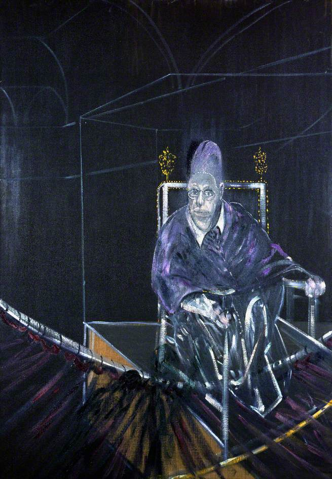
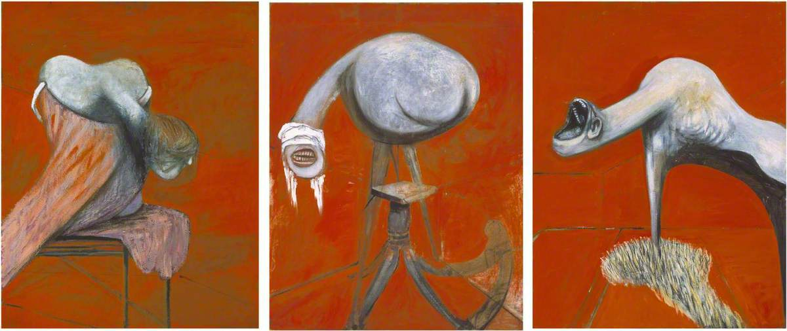

Les œuvres majeures — images, technique & matériaux
Avant d'entrer dans chaque tableau, il faut comprendre comment Bacon travaillait. Son processus était aussi violent et imprévisible que ses sujets. Pas de croquis préparatoires poussés, pas de modèles en pose, pas de plan arrêté. À la place : des accidents maîtrisés, des matériaux inattendus, et une toile retournée à l'envers.
Toile de lin commerciale, côté non-apprêté — il peignait à l'envers pour que la peinture soit absorbée dans les fibres brutes.
Huile sur toile — appliquée avec pinceaux rigides, couteaux à palette, chiffons, et parfois les mains nues.
Sable, poussière, coton, aérosols de peinture automobile, pastel en poudre, bouchons de tubes de peinture, tissus en velours côtelé.
Jamais de modèles vivants. Bacon travaillait à partir de photographies froissées, livres médicaux, photos de crime, images tirées de magazines.
Il accueillait les accidents de peinture comme des révélations. Les éclaboussures, les bavures, les taches imprévues étaient conservées si elles semblaient « justes ».
Bacon enfermait souvent ses figures dans des rectangles géométriques tracés en fines lignes — pour concentrer le regard sur la figure et accentuer l'isolement.

Trois études de figures au pied d'une crucifixion
Trois panneaux. Trois créatures à peine humaines, au cou allongé, à la bouche béante, sans yeux — hurlant contre un fond orange incandescent. Inspirées des Érinyes (les Furies) de la tragédie d'Eschyle, elles n'illustrent pas la crucifixion chrétienne : elles symbolisent la culpabilité, la violence, et la vengeance inscrites dans la nature humaine. Bacon a peint ce triptyque en deux semaines, dans un état d'ivresse quasi-permanent. Exposé à la Lefevre Gallery en avril 1945, il choque l'Angleterre encore en guerre. Pour le critique John Russell : « Il y avait la peinture en Angleterre avant les Trois Études, et la peinture après — et personne ne peut confondre les deux. »
⚙ Technique & Matériaux
Peint à l'huile et au pastel sur panneaux légers Sundeala (un carton-fibre bon marché utilisé faute de toile). Chaque panneau mesure environ 94 × 74 cm. Le fond orange est obtenu avec une peinture à faible teneur en huile, ce qui produit une absorption inégale visible à la surface. Les formes organiques sont tracées avec des gestes libres, proches de ceux de Picasso dans ses biomorphes de la fin des années 1920. Pas de dessin préparatoire : Bacon a esquissé directement sur le panneau en peinture diluée, puis travaillé par couches successives.
Tate Britain, Londres — Collection permanente (don d'Eric Hall, 1953)

Étude d'après le portrait du Pape Innocent X par Velázquez
C'est l'image la plus célèbre de Bacon, et l'une des plus iconiques du XXe siècle. Le point de départ est le portrait du Pape Innocent X peint par Diego Velázquez en 1650 — une œuvre qui représente l'un des hommes les plus puissants du monde dans toute sa majesté. Bacon prend ce symbole d'autorité absolue et le transforme en cri de terreur et d'impuissance : le pape est enfermé dans une cage de verre invisible, sa bouche grand ouverte, ses ornements violets et or fondus dans une texture de chair brûlée. Bacon n'a jamais vu le tableau original en personne — il travaillait exclusivement depuis une reproduction photographique en noir et blanc, ce qui explique en partie les couleurs violentes et non-naturelles qu'il utilise.
⚙ Technique & Matériaux
Huile sur toile de lin, côté non-apprêté. La « cage » autour du pape est tracée en fines lignes avec un pinceau fin et une règle — un device architectural que Bacon utilisera dans des dizaines d'autres tableaux. Le fond sombre est obtenu en frottant de la peinture très diluée directement dans les fibres de la toile. Le visage déformé est réalisé par des passages rapides au chiffon ou à la main ouverte qui écrase la peinture encore fraîche. Les traînées verticales qui barrent l'image simulent les barreaux d'une cage ou un rideau de pluie — Bacon les appelait son « écran de verre ».
Des Moines Art Center, Iowa, États-Unis
Study for Self-Portrait — Triptych
L'autoportrait est un genre que Bacon a pratiqué intensément, particulièrement après la mort de George Dyer en 1971. Sans modèles disponibles la nuit (il peignait souvent de nuit) et refusant de travailler d'après nature, il se tournait vers lui-même. Ces triptyques tardifs montrent un visage qui semble se désintégrer : les traits glissent, les couleurs de la peau vont du vert au violet en passant par le rose vif. Ce n'est pas de la laideur voulue — c'est une tentative de saisir la chair humaine dans ce qu'elle a de plus réel, de plus temporaire, de plus fragile.
⚙ Technique & Matériaux
Huile sur toile de lin non-apprêtée. Pour les autoportraits, Bacon travaillait depuis des photographies prises par son ami John Deakin, photographe de mode pour Vogue. Ces photos étaient ensuite froissées, tachées de peinture et transformées avant d'être utilisées comme référence. La technique de déformation du visage repose sur un geste rapide — frotter la peinture fraîche avec un chiffon circulaire, ou appuyer la paume ouverte sur la zone du visage. Les fonds plats, couleur rouille ou noir profond, sont obtenus avec de la peinture acrylique étalée en premier, que Bacon laisse sécher avant d'intervenir à l'huile sur la figure.
Collection privée / Exposé à la Tate lors de la rétrospective de 1985
Triptych — August 1972
George Dyer est mort en octobre 1971, à Paris, la veille du vernissage de la grande rétrospective de Bacon au Grand Palais. Pendant les années qui suivent, Bacon lui consacre plusieurs triptyques qui reviennent obsessionnellement sur les derniers instants de Dyer. Ce triptyque de 1972 montre Dyer dans une série de poses — vomissant dans un lavabo, effondrée dans une salle de bain carrelée de noir — reconstituées d'après les indices laissés par les circonstances de sa mort. Ce n'est pas une commémoration : c'est Bacon qui rejoue la scène encore et encore, comme pour comprendre, comme pour expier.
⚙ Technique & Matériaux
Huile sur toile de lin non-apprêtée, trois panneaux de 198 × 147,5 cm chacun. Les grandes dimensions — format que Bacon utilisait pour ses triptyques matures — donnent une présence quasi physique à la figure. Les carrelages noirs du sol sont rendus avec une précision géométrique obtenue à la règle, en contraste radical avec la désintégration organique du corps de Dyer. Les zones sombres du fond sont obtenues en imbibant la toile de peinture très diluée, laissant la texture du lin apparaître. Les figures sont ensuite construites par couches, avec des gestes spontanés qui déforment les formes avant qu'elles aient le temps de sécher.
Tate Britain, Londres

Painting (1946)
Un personnage en imperméable, le visage dissimulé par un parapluie ouvert, se tient entre deux gigots de bœuf suspendus comme des draperies. La figure évoque simultanément un dictateur, un boucher et une victime. C'est le premier grand tableau de Bacon à entrer dans une collection muséale : vendu en 1948 au MoMA de New York pour 240 livres sterling par Alfred Barr, le directeur du musée, qui l'avait vu dans une exposition collective à Paris. Ce tableau établit l'équivalence fondamentale dans l'œuvre de Bacon : la chair humaine et la viande animale sont la même chose.
⚙ Technique & Matériaux
Contrairement à ses œuvres ultérieures, ce tableau est peint sur le côté apprêté de la toile de lin (côté blanc). Les premiers plans — la figure, les carcasses — sont réalisés à l'huile avec un impasto épais (couche épaisse de peinture en relief). Le fond rose et les stores violets ont été obtenus par un procédé inhabituel : du pastel broyé ou du pigment pur mélangé à de l'eau, appliqué au pinceau comme une aquarelle sur la toile apprêtée. C'est l'un des rares tableaux de Bacon où deux médiums radicalement différents coexistent sur la même surface.
Museum of Modern Art (MoMA), New York — Collection permanente depuis 1948
Note sur les images
Les œuvres de Francis Bacon sont protégées par le droit d'auteur de l'Estate of Francis Bacon, géré par la DACS (Design and Artists Copyright Society). Les reproductions ci-dessus sont utilisées dans un cadre strictement éducatif et non-commercial. Pour toute utilisation commerciale, contacter : www.dacs.org.uk. Les images sont hébergées par Wikimedia Commons et proviennent de sources muséales publiques.